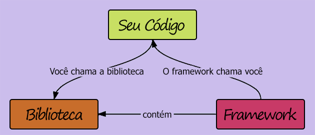

FRAMEWORKS E PROGRAMAS CITADOS NA DISCIPLINA
Este site tem por objetivo realizar uma explicação sobre o controle de versão, git, e uma das plataformas mais utilizadas, github. Esta explicação conterá os principais comandos na utilização do git, quando será necessário a utilização de cada um, e uma breve explicação sobre o site com controle de versão mais popular, o GitHub>
